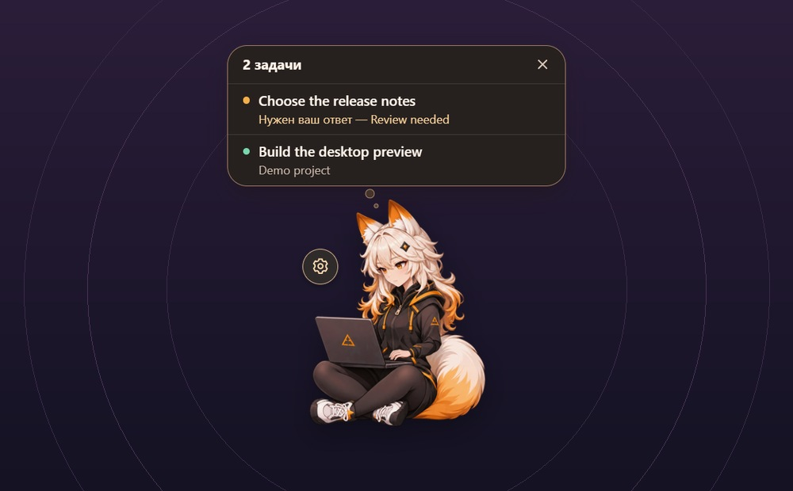

See what your agent is up to.
Kitsu is a little fox-eared companion who lives on your Windows desktop. She types while your agent works and changes pose when a task needs your attention.
Free with Kitsu · Portable for Windows x64
Four states, four animations.
Play a preview to see the same animation that runs in the app.
Bring Kitsu to your desktop.
Kitsu starts in standalone mode. Preview her animations in settings, connect a JSON status file, or use the Agent Console bridge.
Release notes- Download the Windows x64 ZIP from GitHub Releases.
- Extract the entire archive and run
AgentWhisker.exe. - Hover over Kitsu and click the gear to preview animations or change idle motion.